전체 14건
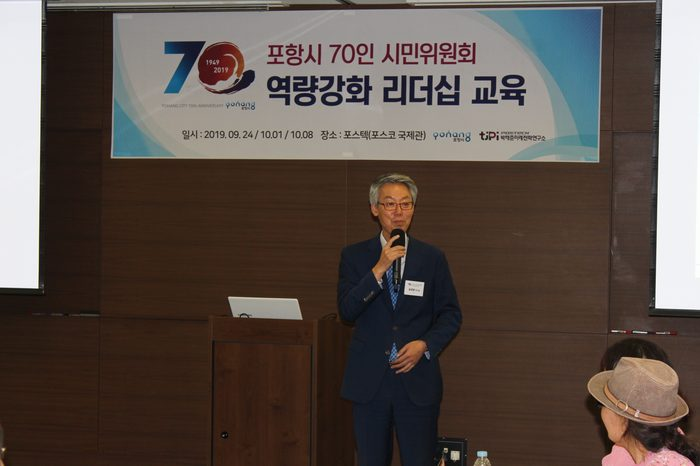
포항시 70인 시민위원회 리더십 역량 강화 교육
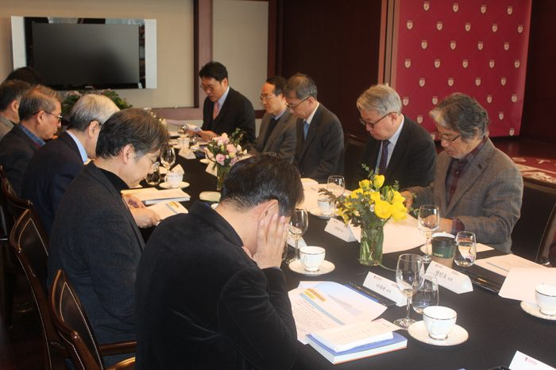
박태준미래전략연구소 2018년 제1회 미래전략연구위원회
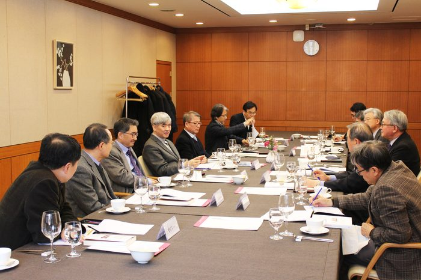
박태준미래전략연구소 2017년 제1회 미래전략연구위원회
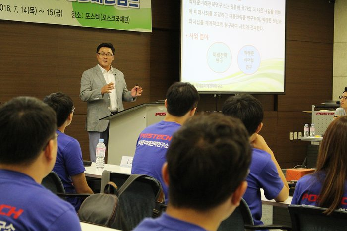
2016 포스텍 청년비전캠프」개최 _ 포스텍 박태준미래전략연구소
포스코와 포스텍 탐방 등 다양한 액티비티 프로그램을 통해 식견을 넓히고 리더십 함양에도 도움을 주고자 마련되었으며,

박태준미래전략연구소 2016 대학(원)생 에세이 & UCC 공모전 발표 및 시상식
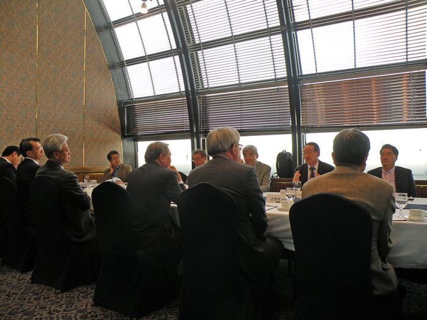
박태준미래전략연구소 2016년 제1회 미래전략연구위원회
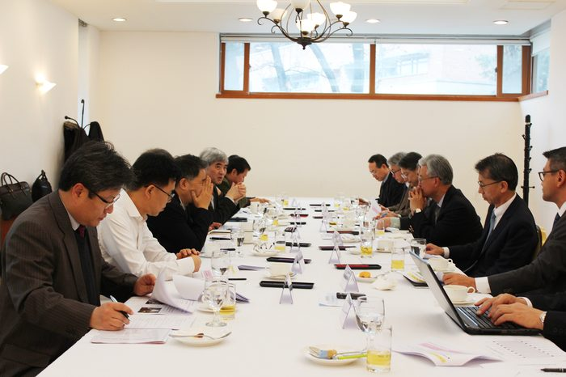
박태준미래전략연구소 2015년 제2차 미래전략연구위원회
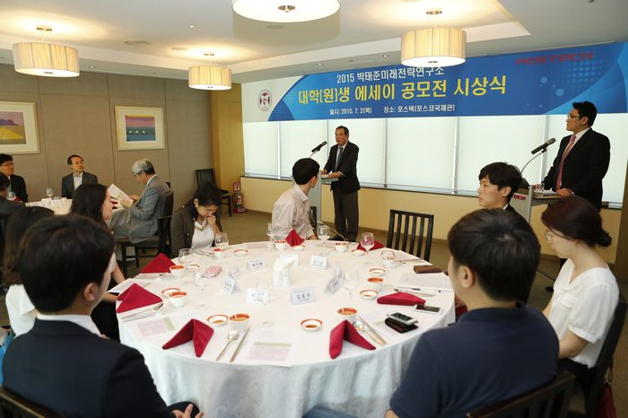
박태준미래전략연구소 2015년 제 1차 운영위원회 및 미래전략연구위원회
박태준미래전략연구소는 인류와 국가의 더 나은 내일을 위하여 미래 사회를 조망하고 대응 전략을 연구하여 그 결과를 사회적으로 전파하고 공유하기 위해 전국 대학(원)생 대상 에세이 공모전을 개최하였고, 이에 대한 시상식을 개최하였습니다.
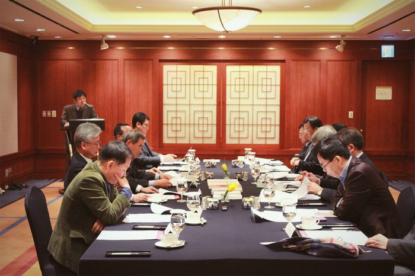
박태준미래전략연구소 2015년 제 1차 운영위원회 및 미래전략연구위원회
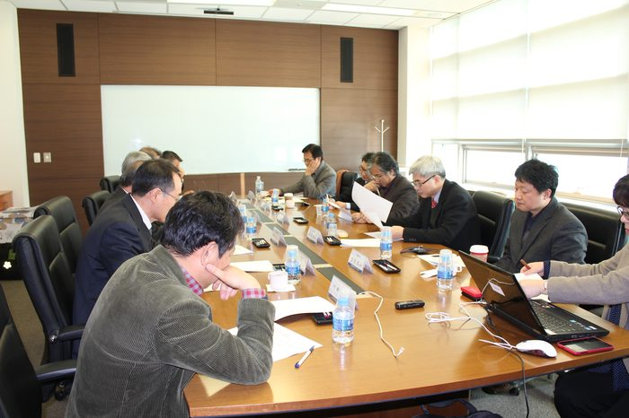
박태준미래전략연구소 2014년 제2회 미래전략연구위원회
[토의 및 결정 사항] ▷ 미래전략연구 2015~2016년 연구 주제 선정 ▷ 2015년 대학(원)생 아이디어 공모전
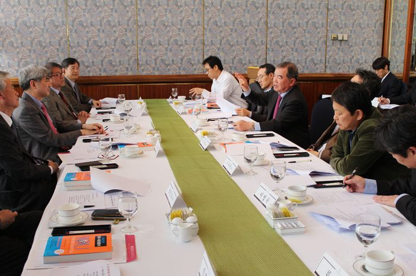
박태준미래전략연구소 2014년 제1회 미래전략연구위원회
[토의 및 결정 사항] ▷ 박태준미래전략연구소의 중, 장기 미래전략연구 영역 결정 ▷ 박태준미래전략연구소 2014년 미래전략 연구주제 결정
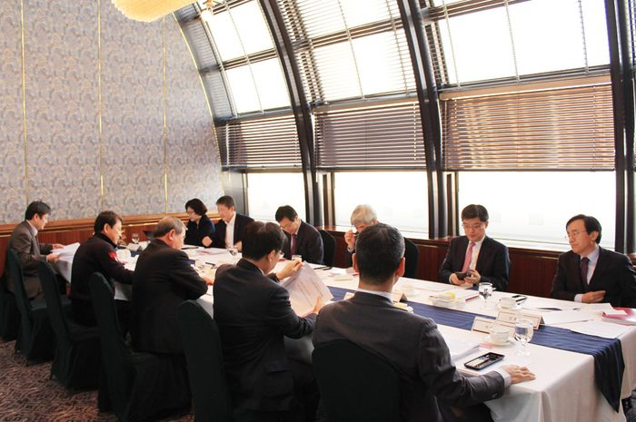
박태준미래전략연구소 2014년 제1회 운영위원회
[토의 및 결정 사항] ▷ 연구소 운영지침 제정안 ▷ 박태준미래전략연구소 2014년 예산안
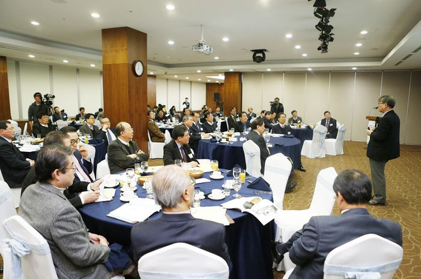
박태준 포스코 명예회장 2주기 추모강연 (제17차 AP포럼)
박태준 포스코 명예회장 2주기 추모강연은 포항 뉴리더 그룹인 AP포럼의 제17차 조찬세미나에서 개최되었으며, 국민대학교 백기복 교수는 `박태준 스탠더드-탁월한 리더십에 이르는 다섯계단`이란 주제 특강을 통해 박태준의 리더십에 대해 강연하였습니다.
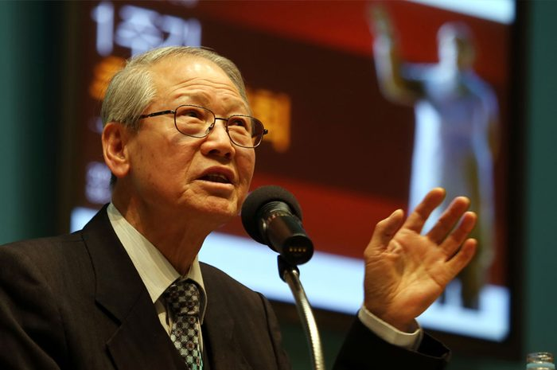
박태준 포스코 명예회장 2주기 추모강연 (제17차 AP포럼)
청암 박태준 선생 서거 1주기를 맞아 우리나라의 산업근대화와 교육보국에 앞정서시고, 특히 포스텍을 설립하여 세계적 명문대학으로 육성에 기여하신 선생의 숭고한 뜻과 공로를 기리기 위하여 추모강연회를 개최하였습니다.
※ The publications and records listed here are in Korean. Titles are shown as published.